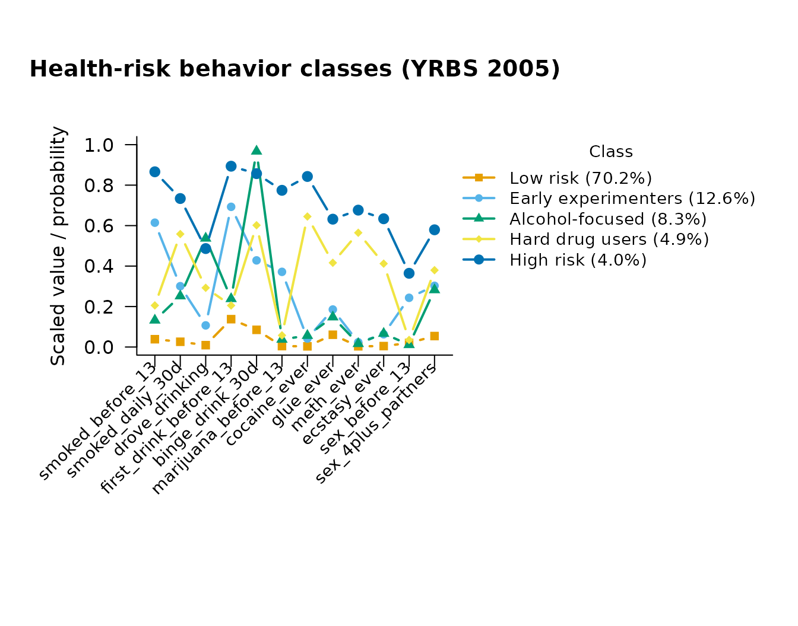

Large public-health and education surveys are almost never simple
random samples: cases carry sampling weights (they stand for
different numbers of people), and they arrive in strata and
clusters (schools, PSUs) whose members resemble each other.
Ignoring the weights biases the estimates; ignoring the design makes the
standard errors too small. mixtureEM handles both through the
weights, strata, and cluster
arguments, available in every model.
The data: 12 health-risk behaviors, YRBS 2005
The bundled yrbs2005 dataset holds twelve dichotomous
risk-behavior items for 13,917 U.S. high-school students from the CDC’s
2005 Youth Risk Behavior Survey, together with the survey’s weight, PSU,
and stratum variables (?yrbs2005). Collins and Lanza (2010,
ch. 2 and 4) built their textbook LCA illustration on these items; we
follow their five-class solution.
data(yrbs2005)
items <- yrbs2005[, 3:14]
names(items)
#> [1] "smoked_before_13" "smoked_daily_30d" "drove_drinking"
#> [4] "first_drink_before_13" "binge_drink_30d" "marijuana_before_13"
#> [7] "cocaine_ever" "glue_ever" "meth_ever"
#> [10] "ecstasy_ever" "sex_before_13" "sex_4plus_partners"The items contain missing responses; mixtureEM switches affected indicators to a full-information (FIML) estimator automatically, and a handful of cases missing on every item are dropped with a warning.
A design-based five-class LCA
set.seed(1)
fit <- suppressWarnings(
fit_mixture(items, n_classes = 5, measurement = "binary",
weights = yrbs2005$weight,
strata = yrbs2005$stratum,
cluster = yrbs2005$psu,
n_init = 20, max_iter = 2000)
)
fit
#> =========================================================
#> LATENT MIXTURE MODEL
#> =========================================================
#> Classes Estimated : 5
#> Estimation Method : 1-step
#> Converged : TRUE (in 486 iterations)
#> Cases Removed : 3 of 13917 with no observed indicator (n = 13914 analysed)
#> Missing Data : 7284 / 166968 cells (4.4%) in 12 items — FIML (MAR assumption)
#> ---------------------------------------------------------
#> Log-Likelihood : -47814.65
#> Parameters : 64
#> AIC : 95757.29
#> BIC : 96239.89
#> SABIC : 96036.51
#> Rel. Entropy : 0.8339
#> Best solution : found by 7 of 20 starts
#> ---------------------------------------------------------
#> Class Weights (Sizes):
#> Class 1: 70.12%
#> Class 2: 12.67%
#> Class 3: 8.26%
#> Class 4: 4.93%
#> Class 5: 4.02%
#> =========================================================
#> Type summary(model) for structural parameters or measurement_summary(model) for item parameters.
class_sizes(fit)
#> class proportion n_expected n_modal
#> 1 1 0.70118277 9756.2571 10136.8160
#> 2 2 0.12671398 1763.0983 1592.7332
#> 3 3 0.08258101 1149.0322 997.4884
#> 4 4 0.04927445 685.6046 639.3167
#> 5 5 0.04024779 560.0078 547.6457The five classes reproduce the familiar YRBS typology — a large low-risk class, substance-experimentation classes, and a small high-everything class:
plot(fit, main = "Health-risk behavior classes (YRBS 2005)")
params <- measurement_summary(fit)
#> =========================================================
#> MEASUREMENT MODEL PARAMETERS
#> =========================================================
#>
#> CATEGORICAL PROBABILITIES
#> Indicator | Overall | Class 1 | Class 2 | Class 3 | Class 4 | Class 5
#> ---------------------------------------------------------------------------------
#> smoked_before_13 | 0.160 | 0.039 | 0.615 | 0.130 | 0.207 | 0.871
#> smoked_daily_30d | 0.134 | 0.026 | 0.302 | 0.251 | 0.561 | 0.737
#> drove_drinking | 0.099 | 0.009 | 0.109 | 0.533 | 0.295 | 0.493
#> first_drink_before_13 | 0.256 | 0.138 | 0.696 | 0.236 | 0.208 | 0.891
#> binge_drink_30d | 0.255 | 0.085 | 0.429 | 0.967 | 0.603 | 0.862
#> marijuana_before_13 | 0.087 | 0.005 | 0.370 | 0.037 | 0.060 | 0.781
#> cocaine_ever | 0.076 | 0.003 | 0.042 | 0.055 | 0.645 | 0.845
#> glue_ever | 0.124 | 0.060 | 0.186 | 0.147 | 0.417 | 0.636
#> meth_ever | 0.062 | 0.003 | 0.024 | 0.016 | 0.565 | 0.680
#> ecstasy_ever | 0.063 | 0.005 | 0.064 | 0.066 | 0.416 | 0.637
#> sex_before_13 | 0.062 | 0.020 | 0.245 | 0.011 | 0.035 | 0.376
#> sex_4plus_partners | 0.143 | 0.054 | 0.306 | 0.282 | 0.382 | 0.588
#>
#> Missing data: 7284 of 166968 cells (4.4%) across 12 items, handled via FIML (MAR assumption).
#> =========================================================Predictors under the survey design
The stored design travels with the fitted model, so the stepwise covariate analysis is design-based too: the standard errors below are linearized (sandwich) estimates that respect the strata and clusters.
fit_cov <- add_covariates(fit, yrbs2005[, c("grade", "sex")])
#> Using 'ML' bias correction (set `correction` to override).
#> 3 case(s) had been removed at fitting time for having no observed indicator; the matching rows of `predictors` were dropped.
results <- summary(fit_cov)
#> =========================================================
#> STRUCTURAL MODEL SUMMARY
#> =========================================================
#>
#> CATEGORICAL LATENT VARIABLE REGRESSION (CLASS PREDICTORS)
#> Reference Class: 1
#> Standard errors: Bakk-Oberski-Vermunt corrected (survey-linearized step 3, hessian step 1)
#> ---------------------------------------------------------
#> OR [95% CI] P-Value
#>
#> Class 2 ON
#> Intercept 0.180 [ 0.146, 0.222] < .001
#> grade.10 0.743 [ 0.623, 0.886] < .001
#> grade.11 0.574 [ 0.449, 0.735] < .001
#> grade.12 0.475 [ 0.361, 0.626] < .001
#> sex.Male 1.795 [ 1.508, 2.136] < .001
#>
#> Class 3 ON
#> Intercept 0.005 [ 0.000, 0.086] < .001
#> grade.10 12.245 [ 0.790, 189.862] 0.073
#> grade.11 29.370 [ 1.930, 446.951] 0.015
#> grade.12 49.680 [ 3.066, 804.995] 0.006
#> sex.Male 1.309 [ 1.060, 1.616] 0.012
#>
#> Class 4 ON
#> Intercept 0.042 [ 0.026, 0.067] < .001
#> grade.10 1.669 [ 0.868, 3.207] 0.124
#> grade.11 2.901 [ 1.881, 4.475] < .001
#> grade.12 2.730 [ 1.752, 4.255] < .001
#> sex.Male 0.709 [ 0.563, 0.894] 0.004
#>
#> Class 5 ON
#> Intercept 0.041 [ 0.030, 0.056] < .001
#> grade.10 0.928 [ 0.637, 1.351] 0.696
#> grade.11 0.771 [ 0.519, 1.145] 0.197
#> grade.12 0.912 [ 0.651, 1.276] 0.590
#> sex.Male 2.124 [ 1.640, 2.752] < .001
#>
#> OMNIBUS TEST PER COVARIATE (effect across all classes)
#> ---------------------------------------------------------
#> Wald Chi2 df P-Value
#> grade 327.962 12 < .001
#> sex 70.588 4 < .001
#> Note: a non-significant test beside large coefficients can be the
#> Hauck-Donner effect; confirm with wald_omnibus_test().
#> =========================================================Note the Standard errors: line naming the estimator:
with a cluster sample, a model that ignored the design would report
noticeably narrower intervals — narrower than the data warrant.
What the weights do and do not change
Two practical points that trip up survey LCA:
-
Weight scale. Sampling weights are rescaled
internally so that they sum to the number of observed cases; only their
relative sizes matter, and the effective sample size in BIC
stays the number of cases actually collected. Frequency weights
(
weight_type = "frequency", where one row stands for that many identical cases) are used as-is. -
Class enumeration. Information criteria remain
comparable across class counts under a fixed design, so
compare_mixtures()works unchanged — pass the sameweights/strata/clusterto every candidate model.